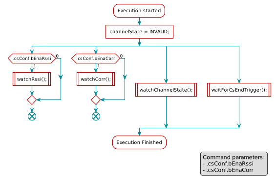
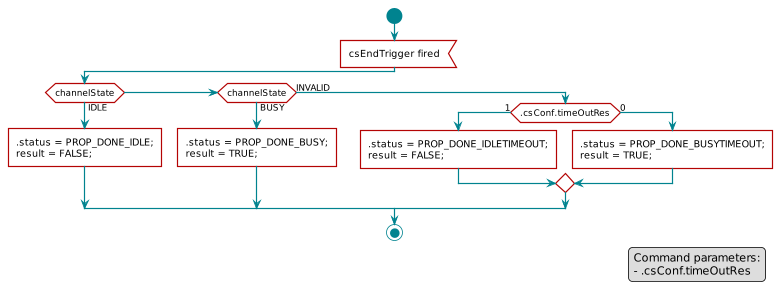

CMD_PROP_CS¶
The carrier sense command monitors the RF activity on a channel and decides, whether a channel is occupied (Busy) or available (Idle). It can be used to implement a CSMA scheme where a TX command only executes when nothing else occupies the channel. Channel detection is based upon two criteria: RSSI measurement and/or correlation (the presence of preamble).
Execution¶
The RF channel can be in several states:
- Invalid
This is the default state at CS start.
- Idle
No signal was found.
- Busy
A signal was detected (RSSI above threshold or correlation succeeded (preamble detected).
Figure 100. Channel states and possible transitions.¶
- *
-> INVALID
All possible transitions between these states are illustrated in
Figure 100. Carrier sense always starts in INVALID
state. Depending on the measured RSSI and/ or the presence of preamble, the channel
goes either into IDLE or BUSY state. The operation ends or may
continue depending on the configuration. In addition, a timeout may occur
which ends the measurement process immediately. After that, a status code is
written to the radio operation and an execution result is generated for the
evaluation phase.
A detailed sequence description of the carrier sense execution phase is shown in Figure 101. In total, four procedures run in parallel:
- watchRssi()
Optional. Constantly measures the signal strength(RSSI) value and updates the channel state.
- watchCorr()
Optional. Correlates the RF signal with the expected preamble sequence and updates the channel state.
- watchChannelState()
Watches and evaluates the channel state changes caused by
watchRssi()orwatchCorr().- waitForCsEndTrigger()
- Optional. Waits for a timeout/end trigger (.csEndTrigger) and
evaluates the channel state when triggered.

Figure 101. The execution phase of CMD_CS as a SDL diagram. Four procedures run in parallel.¶
![scale 0.8
start
:idleCount = 0;\nbusyCount = 0;\nrssiState = INVALID;]
repeat
:RSSI sample available<
note right
See section 'Timing' below.
end note
:RSSI = readRssi();]
if (RSSI < .rssiThr) then (yes)
:idleCount++;\nbusyCount = 0;]
if (idleCount >= .numRssiIdle) then (yes)
:rssiState = IDLE;]
:updateChannelState(rssiState);|
:RSSI state changed>
endif
else (no)
:busyCount++;\nidleCount = 0;]
if (busyCount >= .numRssiBusy) then (yes)
:rssiState = BUSY;]
:updateChannelState(rssiState);|
:RSSI state changed>
endif
endif
repeat while ()
legend right
Command parameters:
- .numRssiBusy
- .numRssiIdle
- .rssiThr
endlegend](../../_images/plantuml-19b4533fcb18698a99ff84b60c390419961353a5.png)
Figure 102. The watchRssi() function from Figure 101.. For each change of rssiState,
the resulting state is updated ccording to Table 13..¶
Figure 103. The watchCorr() function from Figure 101. as a state chart. For each state change, the correlation state is updated according to Table 13..¶
- †
-> invalid
Both procedures, watchRssi() and watchCorr() result in an internal
channel state that is one of INVALID, IDLE or BUSY. Depending on
.bEnaRssi and .bEnaRssi one or both functions are active (not possible to set both to 0).
If only one function is active, the resulting channel state is equal to the
internal channel state. When both functions are active, the
.csConf.operation flag specifies how the results from these functions
are combined:
0: The channel is
BUSYif eitherwatchRssi()ORwatchCorr()indicateBUSY.1: The channel is
BUSYif bothwatchRssi()ANDwatchCorr()indicateBUSY.
A complete mapping can be found in Table 13. The
resulting channel state is then fed into watchChannelState()
(Figure 104.) and waitForCsEndTrigger()
(Figure 105.).
RSSI OR Correlation |
RSSI AND Correlation |
|||||
|---|---|---|---|---|---|---|
Correlation state |
||||||
RSSI State |
INVALID |
IDLE |
BUSY |
INVALID |
IDLE |
BUSY |
INVALID |
INVALID |
INVALID |
BUSY |
INVALID |
IDLE |
INVALID |
IDLE |
INVALID |
IDLE |
BUSY |
IDLE |
IDLE |
IDLE |
BUSY |
BUSY |
BUSY |
BUSY |
INVALID |
IDLE |
BUSY |
![scale 0.8
start
:finished = false;]
repeat
:channelState changed<
:channelState = lookup(rssiState, corrState);|
note right
See lookup table above
endnote
if (channelState) then (IDLE)
if (.csConf.idleOp) then (1)
:finished = true;\nresult = FALSE;\n.status = PROP_DONE_IDLE;]
else (0)
endif
elseif (channelState) then (BUSY)
if (.csConf.busyOp) then (1)
:finished = true;\nresult = TRUE;\n.status = PROP_DONE_BUSY;]
else (0)
endif
else (INVALID)
endif
repeat while (finished?) is (false)
stop
legend right
Command parameters:
- .csConf.busyOp
- .csConf.idleOp
endlegend](../../_images/plantuml-3d6ef3b97a105abb6396edb364526acb69221701.png)
Figure 104. The watchChannelState() function from Figure 101..¶

Figure 105. The waitForCsEndTrigger() function from Figure 101.
in an SDL diagram.¶
Timing¶
The CMD_PROP_CS provides two timing values:
.csEndTimeis the minimum execution time in RAT ticks, after which channel state evaluation is forced. Optional..corrPeriodspecifies the number of RAT ticks between each correlation evaluation.
How to choose a minimum value for cmd.csEndTime so that at least either
.numRssiIdle or .numRssiBusy RSSI samples are measured before a
final decision is forced? The following drawing illustrates the CS command
execution phase.
After the obligatory parsing delay of approximatly 50 µs, command execution
starts and the end trigger for .csEndTime is armed. After a fixed time
, the first RSSI sample is available and the RSSI available
signal in Figure 102. is fired for the first time.
Successive RSSI samples occur with a period . The execution may
either end up due to channel state evaluation in
Figure 104. or a timeout of cmd.csEndTime, but
has an additional evaluation delay of 5 µs.
Please note, that the RSSI sample period might be affected by the Automatic Gain Correction (AGC) and the AGC is always enabled in RX mode. In case of a very strong signal, the AGC might increase the first sample period up to 4 times. If the signal strength is changing very fast, the AGC re-adjusts every RSSI sample period. However, in reality it is safe to assume that only the first period is delayed by the AGC. The value in contrast, is not affected, but the value might be wrong if the signal strength is above -50 dBm. For CSMA applications, this is expected to be uncritical.
A minimum value for cmd.csEndTime can be estimated with formula
(10).
(10)¶
Table 14. provides measurement results for
and . Both depend on the configured RX bandwidth
(.rxBw), specified either in CMD_PROP_RADIO_SETUP or
CMD_PROP_RADIO_DIV_SETUP.
RX bandwidth |
Value for |
First RSSI sample |
RSSI sample period |
|
|---|---|---|---|---|
[kHz] |
CC13x0 |
CC26x0 |
[µs] |
[µs] |
45/55/66 |
32/33/34 |
n/a |
348 |
136 |
78/98/118 |
35/36/37 |
1/2/3 |
214 |
68 |
155/196/236 |
38/39/40 |
4/5/6 |
149 |
34 |
311/392/471 |
41/42/43 |
7/8/9 |
114 |
17 |
622/784/942 |
44/45/46 |
10/11/12 |
98 |
10 |
1243/1567/1884 |
47/48/49 |
13/14/15 |
89 |
10 |